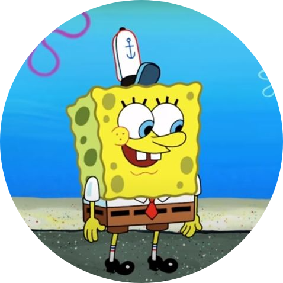

Links (homework)

CV 2020
Date of birth: 14th June 1993
Address: 54 Zabolotnogo Street, apt. 45, Odessa 65-123, Ukraine
E-mail : matkovskiimaxim@gmail.com
Phone number : +380666985113
Nationality : Ukrainian
JOB OBJECTIVE
I would like to work with professionals and use my engineering skills in practice.
EDUCATION
- 2016-2017 Lublin Polytechnic University, Electrical engineering and computer science, Electrical engineering, specialty: Electrical engineering in vehicles;
- 2016-2017 Odessa National Polytechnic University, engineer‘s degree, field of study «Electro-mechanics»
- 2013-2016 Odessa National Polytechnic University, bachelor’s degree, field of study «Electro-mechanics»
- 2009-2013 Odessa College of computer technologies; executive assistant; field of study «Electro-mechanics»
SPECIAL SKILLS
Application knowing: Autocad, SolidWorks, KOMPAS 3D, Adobe PhotoShop, MS Office
Driver’s license category В
WORK EXPERIENCE
- SolidWorks - simulation of the structural strength of the flywheel, used as the creation of an inertial moment of resistance in the test bench for personal electric transport.
- KOMPAS - design of the stand frame for testing the efficiency of engines and batteries in personal electric transport.
- Design and Development - design and development of electric bike.
LANGUAGES SKILLS
- Russian - native
- Russian - native
- Polish - average
- English - average
- German - beginner
PERSONAL QUALITIES
Sociable, like to assist.
INTERESTS
Politic, history, languages, engineering.